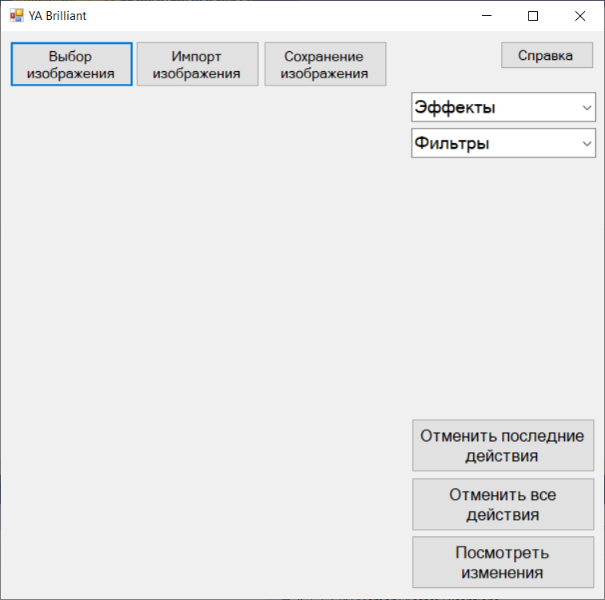

Начало работы
Первое, что Вы увидите после авторизации, это следующую форму.

Первым делом нужно выбрать изображение. Доступно два способа: - ввести путь вручную;
- выбрать из проводника файлов.
Теперь Вам доступны все возможности приложения!
Приятной работы!